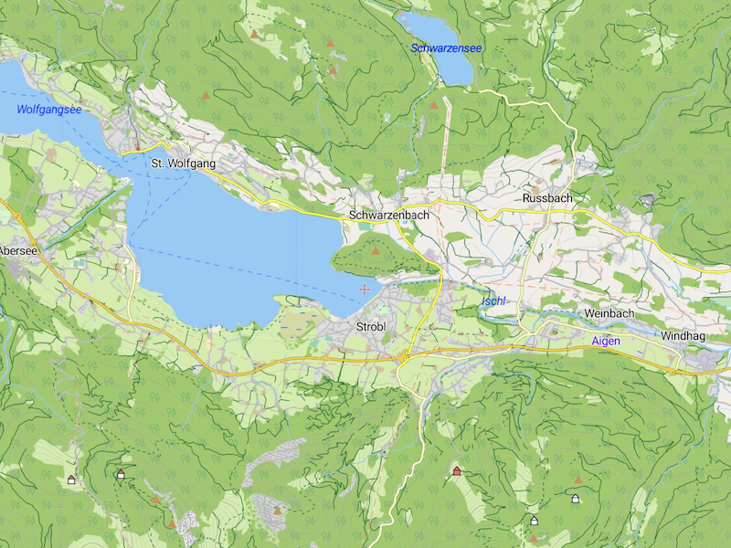
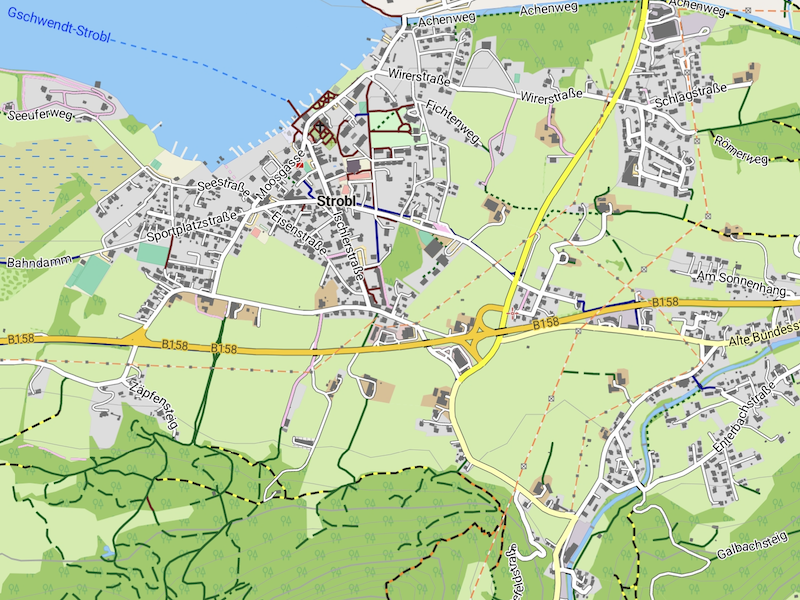

Basisdaten der Freizeitkarten
Die Freizeitkarten "Sommer 2024" basieren auf den OpenStreetMap-Daten vom 10.06.2024. Danke an alle Mapper die Daten hierzu beigetragen haben.
Verbesserungen in der Kartenausgabe "Sommer 2024"
- Verbesserung der Kartendaten durch das OSM-Projekt.
- Verbesserung der Höhenlinien:
- LiDAR: SONNY's LiDAR DIGITAL TERRAIN MODELS (DTM) OF EUROPEAN COUNTRIES (sonny.4lima.de/)
- SRTM-1: U.S. Geological Survey (usgs.gov/centers/eros)
- ALOS-1: AW3D30 - JAXA - Japan Aerospace Exploration Agency (earth.jaxa.jp/en/)
- Die Beschriftung der Höhenlinien zeigt jetzt immer Bergauf.
- Verbesserung der Kartendarstellung.
- Überarbeitung der Kartenzuschnitte.
- Überarbeitung der Webseiten.
Nächste Ausgabe
Die Freizeitkarten "Herbst 2024" erscheinen voraussichtlich Ende September 2024.
Support / Forum
Aus Zeitgründen können wir keinen individuellen Support leisten. Im 'geoclub' gibt es jedoch ein Freizeitkarte-Forum,
wo neben den Freizeitkarte-Entwicklern auch viele Kartennutzer und Poweruser bei Fragen weiterhelfen:
Link: Freizeitkarte Support-Forum

Österreich, Wolfgangsee, eine beliebte Urlaubsregion (Design fzk-outdoor-contrast).
Grundsätzliches
Die Freizeitkarten bestehen immer aus zwei Teilen:
- den Kartendaten (*.map-Datei)
- der Kartendarstellung (Design, Theme)
Installation
Aus Sicherheitsgründen muss jede Karten-App die darzustellenden Karten in ihren Datenbestand übernehmen:
- Die Karten-App bietet den Import (Download) einer Karte als interne Funktion an (z. B. OruxMap, Cruiser, c:geo).
- Aktion: Der Benutzer wählt die entsprechende Funktion innerhalb der Karten-App aus.
- Vom Android-Browser wird ein Link mit Steueranweisungen an die Karten-App übergeben (z. B. OruxMap, Locus Maps).
- Aktion: Der Benutzer aktiviert den entsprechenden Link im Browser seines Android-Gerätes
Download
Der Download (via Browser-Link) einer Freizeitkarte oder eines Kartendesigns ist möglich:
| direkt auf den Personal-Computer (die Kartendesigns sind zusätzlich zu laden) | |
| direkt in die Android-App Locus Map (die Kartendesigns sind in jeder Karte inkludiert) | |
| direkt in die Android-App OruxMaps (die Kartendesigns sind zusätzlich zu laden) |
Hinweise
- Beim Download nach Locus Map bzw. OruxMaps werden größere Datenmengen direkt in das Androidgerät geladen.
- Um den Download nach Locus Map bzw. OruxMaps zu starten, ist der entsprechende Link im Android-Browser zu wählen.

Österreich, Wolfgangsee, See und Umland mit vielen Details (Design fzk-outdoor-contrast).
Downloads via Kartenverzeichnis
Erfahrene Benutzer können die Karten und Kartendesigns auch direkt aus dem Kartenverzeichnis laden:
Link: Kartenverzeichnis